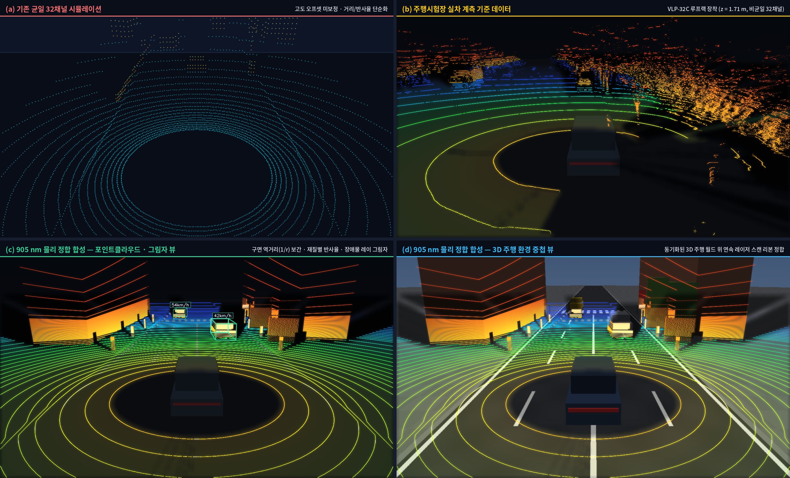
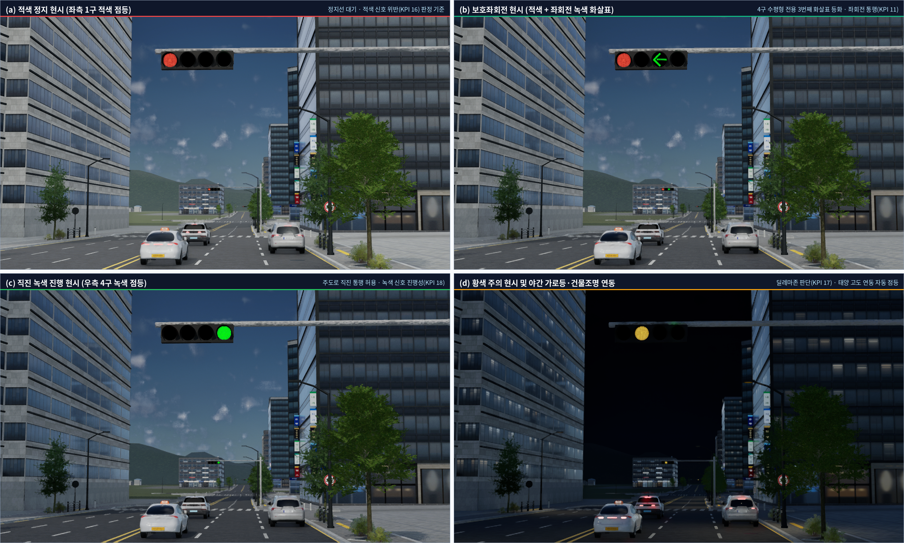
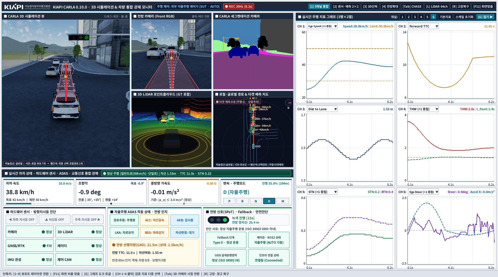
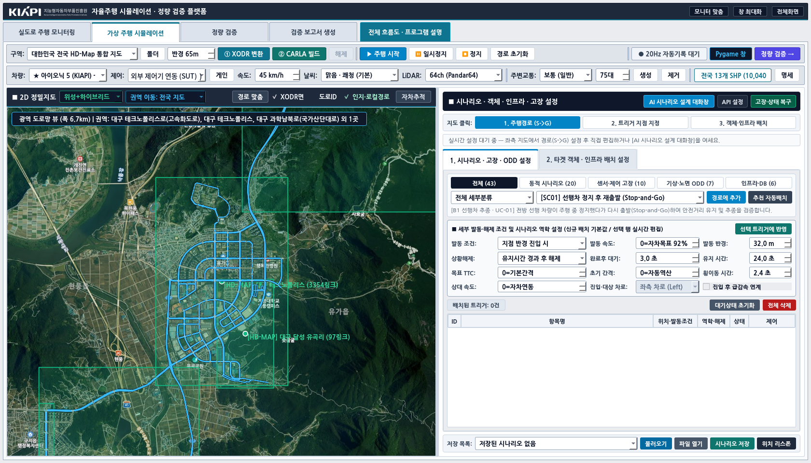

도로 유형(RoadType 2·3·4·5)에 따라 산악 아치 터널, 도심 박스 지하차도, 고가교량 및 수밀 산지 후드를 자동 합성

Sensor Simulation
32/64/128채널 3D LiDAR 수직 채널 각도 및 재질별 반사 특성 모사
루프 장착 기준 비등간격 레이저 링 분포, 재질별 반사 강도, 유리 투과 및 타이어 저반사 특성 반영

4-Head Traffic Signal & SPaT
국내 규격 4구 수평형 신호등(적·황·좌화살표·녹) 및 V2I SPaT 20Hz 동기화
적색 정지, 보호좌회전(적+좌화살표), 직진 녹색, 황색 주의 전환 및 야간 가로등 자동 조광 연동

5-Channel Live Simulation HUD
5채널 통합 3D 관제 모니터 — 3D 뷰 · 전방 · 세그멘테이션 · 3D LiDAR(3D GT 박스) · 타겟 예측 지도
7-갈래 로컬 후보 경로 AR 카펫, 순수 3D LiDAR 점군 및 3D GT 바운딩 박스, 3초 미래 예측 상충 검지 및 6채널 파형 스코프 실시간 표출

Simulation & Verification UI
시뮬레이션 실행(Tab 2) 및 20-KPI 정량 검증 · 성적서 생성(Tab 3·4) 통합 인터페이스
경로 설정, 시나리오·고장 주입, 20Hz 주행 기록, 행동역량 정량 평가 및 PDF 보고서 출력을 단일 프로그램에서 수행
1. 시스템 개요 및 목적
본 문서는 자율주행 소프트웨어의 가상 주행 시험과 주행 안전성 정량 평가를 위해 구축된 통합 시뮬레이션 및 검증 프로그램의 환경 구성 원리와 화면별 사용 방법을 안내합니다.
해외 도로 규격(3구 수직 신호등, 해외 표지판, 외국 차종 위주 구성)을 기본으로 하는 일반 시뮬레이터에서 국내 도심 주행 및 교통법규 준수 여부를 시험할 때 발생하는 환경 차이를 줄이기 위해, 국토지리정보원(NGII) 정밀도로지도와 국내 교통신호·표지·건축물·차종 구성을 반영하고 실도로 주행 로그와 가상 주행 로그를 동일한 국제표준 기반 20개 안전 평가지표(AVSC 00008 · UN R157 · RSS 연계)로 검증할 수 있도록 설계되어 있습니다. 전체 데이터 흐름도는 화면 구성 및 워크플로우 문서에서 확인할 수 있습니다.
2. 분류별 문서 구성 안내
Getting Started · 시작하기
실행 환경 · 조작키 · 전체 워크플로우
권장 하드웨어 사양, 첫 가상 주행부터 성적서 출력까지의 5단계 기본 절차, 단축키 요약 및 4-Tab 간 데이터 흐름을 다룹니다.